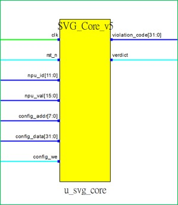
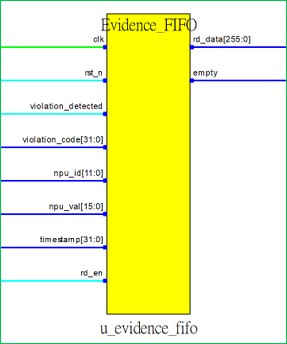
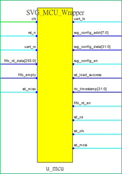
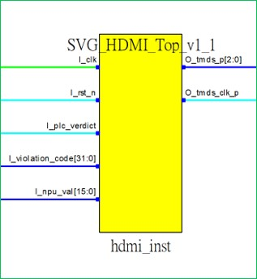

<!DOCTYPE html>
<html lang="zh-TW">
<head>
    <meta charset="UTF-8">
    <meta name="viewport" content="width=device-width, initial-scale=1.0">
    <title>RTL 架構規格 | 可信智慧整合</title>
    
    <script src="https://unpkg.com/react@18/umd/react.development.js" crossorigin></script>
    <script src="https://unpkg.com/react-dom@18/umd/react-dom.development.js" crossorigin></script>
    <script src="https://unpkg.com/@babel/standalone/babel.min.js"></script>
    <script src="https://cdn.tailwindcss.com"></script>
    <link href="https://cdnjs.cloudflare.com/ajax/libs/font-awesome/6.0.0/css/all.min.css" rel="stylesheet">
    <link href="https://unpkg.com/aos@2.3.1/dist/aos.css" rel="stylesheet">
    <script src="https://unpkg.com/aos@2.3.1/dist/aos.js"></script>
    <link href="https://fonts.googleapis.com/css2?family=Inter:wght@300;400;500;600;700;900&family=Noto+Sans+TC:wght@300;400;500;700;900&display=swap" rel="stylesheet">

    <style>
        body { font-family: 'Inter', 'Noto Sans TC', sans-serif; overflow-x: hidden; background-color: #0b1120; color: #e2e8f0; }
        .glass-nav { background: rgba(11, 17, 32, 0.9); backdrop-filter: blur(12px); border-bottom: 1px solid rgba(255, 255, 255, 0.05); }
        .accent-gradient { background: linear-gradient(135deg, #2563eb, #10b981); }
        .doc-card { background: rgba(30, 41, 59, 0.4); border: 1px solid rgba(255, 255, 255, 0.05); border-radius: 0.75rem; padding: 2rem; }
        .highlight-box { background: rgba(16, 185, 129, 0.1); border-left: 4px solid #10b981; padding: 1rem 1.5rem; border-radius: 0 0.5rem 0.5rem 0; }
        .signal-badge { display: inline-flex; align-items: center; justify-content: center; padding: 0.1rem 0.5rem; border-radius: 0.25rem; font-size: 0.7rem; font-weight: 700; letter-spacing: 0.05em; text-transform: uppercase; min-width: 40px;}
        .sig-in { background-color: rgba(16, 185, 129, 0.2); color: #34d399; border: 1px solid rgba(16, 185, 129, 0.3); }
        .sig-out { background-color: rgba(59, 130, 246, 0.2); color: #60a5fa; border: 1px solid rgba(59, 130, 246, 0.3); }
        
        /* Image Preview Styles */
        .preview-container { cursor: zoom-in; transition: transform 0.3s ease; }
        .preview-container:hover { transform: translateY(-3px); }
    </style>
</head>
<body class="antialiased selection:bg-blue-500/30 pt-20">
    <div id="root"></div>

    <script type="text/babel">
        const { useEffect } = React;

        const Navbar = () => (
            <nav className="fixed w-full top-0 z-50 glass-nav transition-all">
                <div className="max-w-7xl mx-auto px-6 h-20 flex items-center justify-between">
                    <a href="index2.html" className="flex items-center gap-3 cursor-pointer hover:opacity-80 transition">
                        <div className="w-8 h-8 accent-gradient rounded flex items-center justify-center shadow-lg shadow-blue-500/20">
                            <span className="font-bold text-white">W</span>
                        </div>
                        <div>
                            <div className="font-bold text-lg tracking-tight text-white">可信智慧整合</div>
                            <div className="text-[10px] text-slate-400 uppercase tracking-widest">WesmartAI Co., Ltd.</div>
                        </div>
                    </a>
                    <div className="hidden md:flex text-sm font-medium text-slate-300 gap-8 items-center">
                        <a href="index2.html#architecture" className="hover:text-white transition">系統架構</a>
                        <a href="ohacss2.html" className="hover:text-white transition">Gaas 平台</a>
                        <a href="report2.html" className="hover:text-white transition">FPGA 報告</a>
                        <a href="tech-dd2.html" className="hover:text-white transition">Tech DD</a>
                        <span className="text-blue-400 cursor-default border-b-2 border-blue-400 pb-1">RTL 規格</span>
                        <a href="founder.html" className="hover:text-white transition">創辦人</a>
                        <a href="rtl-wrapper.html" className="px-3 py-1 rounded-full border border-slate-600 hover:bg-slate-800 hover:text-white transition text-xs font-bold tracking-wider">EN</a>
                    </div>
                </div>
            </nav>
        );

        const Footer = () => (
            <footer className="bg-[#070b14] border-t border-slate-800 pt-16 pb-8 text-slate-400 mt-20">
                <div className="max-w-7xl mx-auto px-6">
                    <div className="grid md:grid-cols-3 gap-8 mb-12">
                        <div>
                            <h4 className="text-white text-lg font-bold mb-4">可信智慧整合</h4>
                            <p className="text-sm leading-relaxed mb-4">
                                讓信任清晰可見。<br/>
                                矽級別的物理隔離：實體 AI (Physical AI) 的終極合規防禦。
                            </p>
                        </div>
                        <div>
                            <h4 className="text-white text-lg font-bold mb-4">聯絡我們</h4>
                            <ul className="space-y-2 text-sm">
                                <li><i className="fas fa-map-marker-alt mr-2 w-4 text-center"></i>台南市佳里區光明街68號1樓</li>
                                <li><i className="fas fa-phone mr-2 w-4 text-center"></i>+886-912-310570</li>
                            </ul>
                        </div>
                        <div>
                            <h4 className="text-white text-lg font-bold mb-4">網站導覽</h4>
                            <ul className="space-y-2 text-sm">
                                <li><a href="index2.html" className="hover:text-blue-400 transition text-left block">首頁</a></li>
                                <li><a href="ohacss2.html" className="hover:text-blue-400 transition text-left block">OHACSS 產品</a></li>
                                <li><a href="report2.html" className="hover:text-blue-400 transition text-left block">FPGA 技術報告</a></li>
                                <li><a href="tech-dd2.html" className="hover:text-blue-400 transition text-left block">技術盡職調查 (Tech DD)</a></li>
                                <li><span className="text-slate-500 cursor-default block">RTL 架構規格</span></li>
                                <li><a href="founder.html" className="hover:text-blue-400 transition text-left block">創辦人</a></li>
                                <li className="pt-2"><a href="rtl-wrapper.html" className="text-blue-400 hover:text-blue-300 font-bold transition text-left block flex items-center gap-2"><i className="fas fa-globe"></i> English (EN)</a></li>
                            </ul>
                        </div>
                    </div>
                    <div className="border-t border-slate-800 pt-8 flex flex-col md:flex-row justify-between items-center text-xs">
                        <p>&copy; 2026 可信智慧整合有限公司 (WesmartAI Co., Ltd.). All rights reserved.</p>
                        <p className="mt-2 md:mt-0">統一編號: 42917004</p>
                    </div>
                </div>
            </footer>
        );

        const SignalRow = ({ name, type, color, desc }) => (
            <div className="border-b border-slate-800/50 py-2 flex flex-col sm:flex-row sm:items-center gap-2 hover:bg-slate-800/30 transition-colors px-2 rounded">
                <div className="sm:w-2/5 flex items-center gap-3">
                    <span className={`signal-badge ${type === 'IN' ? 'sig-in' : 'sig-out'}`}>{type}</span>
                    <code className="text-[13px] font-semibold text-slate-200">{name}</code>
                </div>
                <div className="sm:w-3/5 flex items-center gap-3">
                    <div className="hidden md:block w-2.5 h-2.5 rounded-full shrink-0" style={{ backgroundColor: color }}></div>
                    <p className="text-xs text-slate-400 leading-relaxed">{desc}</p>
                </div>
            </div>
        );

        const RTLPage = () => {
            useEffect(() => {
                AOS.init({ once: true, offset: 50, duration: 800 });
            }, []);

            return (
                <div className="max-w-6xl mx-auto px-6 pt-12 pb-24">
                    
                    {/* Header */}
                    <div className="mb-10 text-center" data-aos="fade-down">
                        <div className="inline-flex items-center gap-2 px-3 py-1 rounded-full bg-indigo-900/30 border border-indigo-700/50 text-indigo-400 text-xs font-bold uppercase tracking-widest mb-6">
                            技術規格書
                        </div>
                        <h1 className="text-3xl md:text-5xl font-black text-white mb-6 leading-tight tracking-tight">
                            RTL 架構子系統 <br/>
                            <span className="text-2xl md:text-3xl text-slate-400 font-medium">頂層實例化介面規格</span>
                        </h1>
                        
                        <div className="bg-amber-900/20 border border-amber-600/50 p-5 rounded-lg shadow-lg text-left max-w-4xl mx-auto">
                            <h4 className="text-amber-400 font-bold text-sm mb-2 flex items-center"><i className="fas fa-shield-alt mr-2"></i>智慧財產權保護聲明</h4>
                            <p className="text-slate-300 text-sm leading-relaxed">
                                為了在<strong>技術盡職調查 (Technical Due Diligence)</strong> 階段嚴格保護本公司的專有組合邏輯與核心營業秘密，本技術文件僅揭露構成 SVG 架構的<strong>四個主要子模組</strong>的結構化 I/O 介面。這些由 EDA 生成的視覺化封裝介面，作為評估將矽裁決閘 (Silicon Verdict Gate) 整合至邊緣 AI SoC 的標準技術參考。
                            </p>
                        </div>
                    </div>

                    <div className="grid grid-cols-1 gap-12">
                        
                        {/* Module 1: SVG Core */}
                        <div className="doc-card p-0 overflow-hidden" data-aos="fade-up">
                            <div className="p-6 border-b border-slate-700 bg-slate-800/50 flex flex-col md:flex-row md:items-center justify-between gap-4">
                                <div>
                                    <h3 className="text-xl font-bold text-emerald-400 flex items-center gap-2"><i className="fas fa-brain"></i> 1. 核心大腦：矽裁決引擎</h3>
                                    <p className="text-sm text-slate-300 mt-1">實例化名稱：<code>u_svg_core ($VG_Core_v5)</code></p>
                                </div>
                                <div className="text-xs text-slate-400 bg-slate-900 px-3 py-2 rounded border border-slate-700 text-right">
                                    <strong>戰略價值：</strong> 實現 9.52 µs 絕對決定性延遲。純硬體組合邏輯，執行全平行的規則掃描。
                                </div>
                            </div>
                            <div className="flex flex-col lg:flex-row">
                                <div className="lg:w-1/3 p-6 bg-white flex items-center justify-center border-r border-slate-700 preview-container" onClick={() => window.openModal('jpg23.jpg', '模組一：矽裁決引擎 ($VG_Core_v5)')}>
                                    
                                </div>
                                <div className="lg:w-2/3 p-6 bg-slate-900/50">
                                    <h4 className="text-white font-bold text-sm mb-3 border-b border-slate-800 pb-2">介面訊號 (Interface Signals)</h4>
                                    <SignalRow name="clk" type="IN" color="#00FF00" desc="系統時脈輸入。" />
                                    <SignalRow name="rst_n" type="IN" color="#00FFFF" desc="低態致能重置訊號。" />
                                    <SignalRow name="npu_id[11:0]" type="IN" color="#0000FF" desc="特定目標致動器/節點之識別碼。" />
                                    <SignalRow name="npu_val[15:0]" type="IN" color="#0000FF" desc="由 AI 推論引擎輸入之機率性輸出參數。" />
                                    <SignalRow name="config_addr[7:0]" type="IN" color="#0000FF" desc="用於將物理安全規則載入本地 SSRAM 的位址匯流排。" />
                                    <SignalRow name="config_data[31:0]" type="IN" color="#0000FF" desc="安全規則酬載之資料匯流排。" />
                                    <SignalRow name="config_we" type="IN" color="#00FFFF" desc="規則配置記憶體之寫入致能訊號。" />
                                    <SignalRow name="violation_code[31:0]" type="OUT" color="#0000FF" desc="若攔截到 AI 幻覺，輸出所違反的確切規則 ID。" />
                                    <SignalRow name="verdict" type="OUT" color="#00FFFF" desc="直接路由至致動器的確定性硬體控制狀態 (允許/阻擋)。" />
                                </div>
                            </div>
                        </div>

                        {/* Module 2: Evidence FIFO */}
                        <div className="doc-card p-0 overflow-hidden" data-aos="fade-up">
                            <div className="p-6 border-b border-slate-700 bg-slate-800/50 flex flex-col md:flex-row md:items-center justify-between gap-4">
                                <div>
                                    <h3 className="text-xl font-bold text-sky-400 flex items-center gap-2"><i className="fas fa-shield-alt"></i> 2. 物理隔離：證據鏈緩衝區</h3>
                                    <p className="text-sm text-slate-300 mt-1">實例化名稱：<code>u_evidence_fifo (Evidence_FIFO)</code></p>
                                </div>
                                <div className="text-xs text-slate-400 bg-slate-900 px-3 py-2 rounded border border-slate-700 text-right">
                                    <strong>戰略價值：</strong> 非同步硬體 FIFO。當偵測到異常時，瞬間鎖存違規代碼與時間戳。確保資料零遺失的第一道硬體防線。
                                </div>
                            </div>
                            <div className="flex flex-col lg:flex-row">
                                <div className="lg:w-1/3 p-6 bg-white flex items-center justify-center border-r border-slate-700 preview-container" onClick={() => window.openModal('jpg24.jpg', '模組二：證據鏈緩衝區 (Evidence_FIFO)')}>
                                    
                                </div>
                                <div className="lg:w-2/3 p-6 bg-slate-900/50">
                                    <h4 className="text-white font-bold text-sm mb-3 border-b border-slate-800 pb-2">介面訊號 (Interface Signals)</h4>
                                    <SignalRow name="clk" type="IN" color="#00FF00" desc="系統時脈輸入。" />
                                    <SignalRow name="rst_n" type="IN" color="#00FFFF" desc="低態致能重置訊號。" />
                                    <SignalRow name="violation_detected" type="IN" color="#00FFFF" desc="當 SVG 核心攔截到異常時，觸發寫入之訊號。" />
                                    <SignalRow name="violation_code[31:0]" type="IN" color="#0000FF" desc="規則違反識別碼酬載。" />
                                    <SignalRow name="npu_id[11:0]" type="IN" color="#0000FF" desc="致動器節點識別碼。" />
                                    <SignalRow name="npu_val[15:0]" type="IN" color="#0000FF" desc="AI 試圖執行之確切越界參數。" />
                                    <SignalRow name="timestamp[31:0]" type="IN" color="#0000FF" desc="事件之硬體 RTC 同步時間戳記。" />
                                    <SignalRow name="rd_en" type="IN" color="#00FFFF" desc="由下游治理總管控制之讀取致能訊號。" />
                                    <SignalRow name="rd_data[255:0]" type="OUT" color="#0000FF" desc="256位元寬匯流排，安全匯出串接完成之完整證據封包。" />
                                    <SignalRow name="empty" type="OUT" color="#0000FF" desc="FIFO 狀態旗標。" />
                                </div>
                            </div>
                        </div>

                        {/* Module 3: MCU Wrapper */}
                        <div className="doc-card p-0 overflow-hidden" data-aos="fade-up">
                            <div className="p-6 border-b border-slate-700 bg-slate-800/50 flex flex-col md:flex-row md:items-center justify-between gap-4">
                                <div>
                                    <h3 className="text-xl font-bold text-amber-400 flex items-center gap-2"><i className="fas fa-server"></i> 3. 治理總管：RISC-V 軟核心</h3>
                                    <p className="text-sm text-slate-300 mt-1">實例化名稱：<code>u_mcu (SVG_MCU_Wrapper)</code></p>
                                </div>
                                <div className="text-xs text-slate-400 bg-slate-900 px-3 py-2 rounded border border-slate-700 text-right">
                                    <strong>戰略價值：</strong> PicoRV32 裸機運行 (無 OS)。以旁路架構接管 UART 通訊與 SD 卡寫入，確保複雜的 I/O 作業絕不拖累核心裁決的奈秒級延遲。
                                </div>
                            </div>
                            <div className="flex flex-col lg:flex-row">
                                <div className="lg:w-1/3 p-6 bg-white flex items-center justify-center border-r border-slate-700 preview-container" onClick={() => window.openModal('jpg25.jpg', '模組三：治理總管 (SVG_MCU_Wrapper)')}>
                                    
                                </div>
                                <div className="lg:w-2/3 p-6 bg-slate-900/50">
                                    <h4 className="text-white font-bold text-sm mb-3 border-b border-slate-800 pb-2">介面訊號 (Interface Signals)</h4>
                                    <SignalRow name="clk" type="IN" color="#00FF00" desc="系統時脈輸入。" />
                                    <SignalRow name="rst_n" type="IN" color="#00FFFF" desc="低態致能重置訊號。" />
                                    <SignalRow name="uart_rx" type="IN" color="#00FFFF" desc="用於外部設定之序列接收線路。" />
                                    <SignalRow name="fifo_rd_data[255:0]" type="IN" color="#0000FF" desc="接收來自隔離 FIFO 之證據封包。" />
                                    <SignalRow name="fifo_empty" type="IN" color="#00FFFF" desc="監控 FIFO 狀態以觸發 SD 卡寫入。" />
                                    <SignalRow name="sd_miso" type="IN" color="#00FFFF" desc="SD 卡介面之 SPI MISO 腳位。" />
                                    <SignalRow name="uart_tx" type="OUT" color="#00FFFF" desc="序列傳送線路。" />
                                    <SignalRow name="svg_config_addr[7:0]" type="OUT" color="#0000FF" desc="驅動規則更新至 SVG 核心 SSRAM。" />
                                    <SignalRow name="svg_config_data[31:0]" type="OUT" color="#0000FF" desc="驅動規則酬載更新至 SVG 核心。" />
                                    <SignalRow name="svg_config_en" type="OUT" color="#00FFFF" desc="發出規則寫入致能訊號。" />
                                    <SignalRow name="sd_load_success" type="OUT" color="#00FFFF" desc="開機狀態旗標，確認已成功從 SD 卡載入規則包。" />
                                    <SignalRow name="rtc_timestamp[31:0]" type="OUT" color="#0000FF" desc="提供實時時鐘 (RTC) 同步訊號至 FIFO。" />
                                    <SignalRow name="fifo_rd_en" type="OUT" color="#00FFFF" desc="觸發證據 FIFO 之 Pop 讀取操作。" />
                                    <SignalRow name="sd_cs / sd_clk / sd_mosi" type="OUT" color="#00FFFF" desc="用於非揮發性分類帳儲存之 SPI 控制線路。" />
                                </div>
                            </div>
                        </div>

                        {/* Module 4: HDMI Top */}
                        <div className="doc-card p-0 overflow-hidden" data-aos="fade-up">
                            <div className="p-6 border-b border-slate-700 bg-slate-800/50 flex flex-col md:flex-row md:items-center justify-between gap-4">
                                <div>
                                    <h3 className="text-xl font-bold text-rose-400 flex items-center gap-2"><i className="fas fa-desktop"></i> 4. 即時告警：硬體視訊輸出</h3>
                                    <p className="text-sm text-slate-300 mt-1">實例化名稱：<code>hdmi_inst (SVG_HDMI_Top_v1_1)</code></p>
                                </div>
                                <div className="text-xs text-slate-400 bg-slate-900 px-3 py-2 rounded border border-slate-700 text-right">
                                    <strong>戰略價值：</strong> 實體層 TMDS 驅動。不依賴 OS 或 GPU，直接透過數位硬體訊號渲染螢幕像素，保證操作員能接收零延遲的通過/阻擋 (PASS/BLOCK) 視覺告警。
                                </div>
                            </div>
                            <div className="flex flex-col lg:flex-row">
                                <div className="lg:w-1/3 p-6 bg-white flex items-center justify-center border-r border-slate-700 preview-container" onClick={() => window.openModal('jpg26.jpg', '模組四：即時告警視訊輸出 (SVG_HDMI_Top)')}>
                                    
                                </div>
                                <div className="lg:w-2/3 p-6 bg-slate-900/50">
                                    <h4 className="text-white font-bold text-sm mb-3 border-b border-slate-800 pb-2">介面訊號 (Interface Signals)</h4>
                                    <SignalRow name="I_clk" type="IN" color="#00FF00" desc="專屬像素時脈 (例如：720p 為 74.25 MHz)。" />
                                    <SignalRow name="I_rst_n" type="IN" color="#00FFFF" desc="低態致能重置訊號。" />
                                    <SignalRow name="I_plc_verdict" type="IN" color="#00FFFF" desc="讀取來自 SVG 核心的絕對狀態 (ALLOW/BLOCK)。" />
                                    <SignalRow name="I_violation_code[31:0]" type="IN" color="#0000FF" desc="接收特定的規則違反代碼以進行螢幕渲染。" />
                                    <SignalRow name="I_npu_val[15:0]" type="IN" color="#0000FF" desc="接收異常參數數值以進行螢幕渲染。" />
                                    <SignalRow name="O_tmds_p[2:0]" type="OUT" color="#0000FF" desc="驅動實體 HDMI 埠的差分 TMDS 資料通道。" />
                                    <SignalRow name="O_tmds_clk_p" type="OUT" color="#00FFFF" desc="差分 TMDS 時脈通道。" />
                                </div>
                            </div>
                        </div>

                    </div>
                </div>
            );
        };

        const App = () => (
            <>
                <Navbar />
                <RTLPage />
                <Footer />
                
                {/* Image Modal */}
                <div id="imageModal" className="fixed inset-0 z-[100] hidden bg-black/95 flex-col justify-center items-center p-4" style={{backdropFilter: 'blur(8px)', transition: 'all 0.3s ease'}}>
                    <span className="absolute top-6 right-8 text-white text-4xl cursor-pointer hover:text-red-500 transition" onClick={() => {
                        document.getElementById('imageModal').classList.add('hidden');
                        document.body.style.overflow = 'auto';
                    }}>&times;</span>
                    
                    <p id="modalCaption" className="mt-6 text-slate-300 text-lg font-bold"></p>
                </div>
            </>
        );

        // Global modal handler
        window.openModal = (imgSrc, caption) => {
            document.getElementById('modalImage').src = imgSrc;
            document.getElementById('modalCaption').innerText = caption;
            document.getElementById('imageModal').classList.remove('hidden');
            document.body.style.overflow = 'hidden';
        };
        
        // Escape key to close modal
        document.addEventListener('keydown', (e) => { 
            if (e.key === "Escape") {
                const modal = document.getElementById('imageModal');
                if(modal && !modal.classList.contains('hidden')) {
                    modal.classList.add('hidden');
                    document.body.style.overflow = 'auto';
                }
            } 
        });

        const root = ReactDOM.createRoot(document.getElementById('root'));
        root.render(<App />);
    </script>
</body>
</html>
